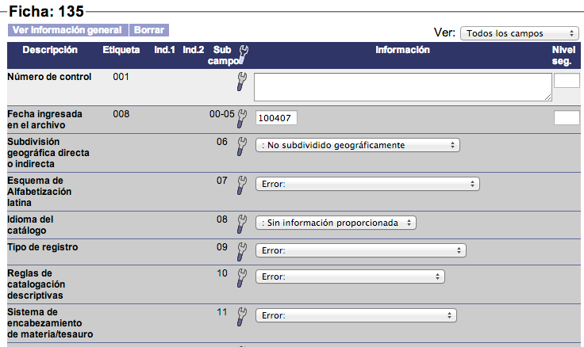
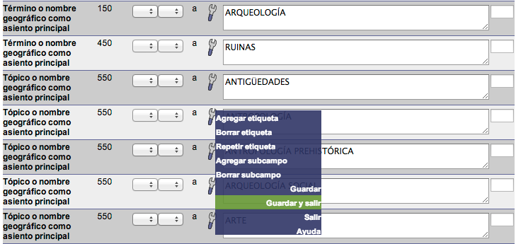
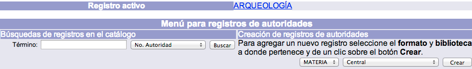
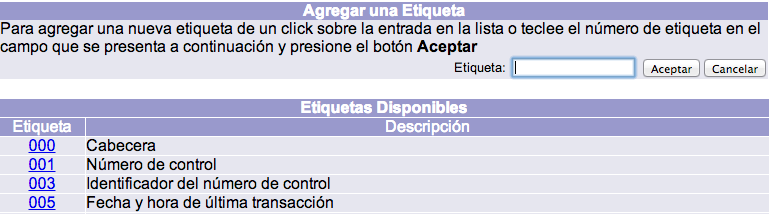
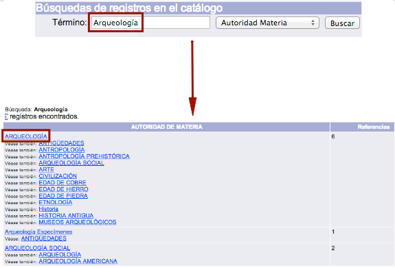
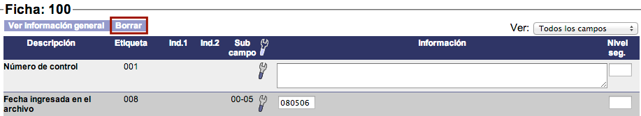

Creación de registros
El procedimiento de creación de registros de autoridad es el siguiente:
- En la sección de Creación de registros de autoridad, seleccionar el formato que se desea utilizar para la nueva autoridad, así como la biblioteca responsable de crearla. Esto se realiza dando clic en el menú desplegable correspondiente.

- Hacer clic en el botón Crear de la misma sección. Se despliega la hoja de captura / formulario de catalogación relacionado con el formato elegido en el paso anterior.

- Introducir la información sobre la autoridad en los campos destinados a ello.

- Una vez concluida la introducción de datos, para proceder a guardar el registro, colocar el puntero del ratón sobre el icono de herramienta para desplegar el menú contextual asociado. A continuación, hacer clic en la opción Guardar y salir (o Guardar, si se quiere seguir trabajando sobre el registro).

- Finalmente, el sistema regresa a la pantalla de Menú AUT mostrando la autoridad creada como registro activo, lo que indica que dicha autoridad ha sido guardada con éxito y ya puede ser consultada a través del catálogo de autoridades o desde las hojas de captura de control bibliográfico.

Menú contextual de opciones
Uno de los elementos de la plantilla es el icono de herramienta, que despliega el menú contextual de opciones para todos los campos al colocar el puntero del ratón sobre cualquiera de estas imágenes.

Las opciones que aparecen en el menú contextual son las siguientes:
- Agregar etiqueta: al hacer clic sobre esta opción, se despliega una ventana emergente con la lista de etiquetas definidas que pueden añadirse a la plantilla. Para seleccionar una de ellas, se puede pinchar en el número de la etiqueta que se quiere agregar o bien escribir dicho número en el campo de texto Etiqueta, situado en la parte superior derecha y después hacer clic en el botón Aceptar.

- Borrar etiqueta: permite borrar el campo seleccionado, subcampos incluidos. Este tipo de opciones, al igual que Borrar subcampo, no modifican el diseño de la plantilla. Es decir, no borran definitivamente la etiqueta de todos los registros, sino sólo del que se está creando o editando.
- Repetir etiqueta: permite repetir el campo seleccionado. La nueva etiqueta se agrega justo debajo de la usada como referencia para la repetición. Al igual que en el caso anterior, estas opciones tampoco modifican el diseño de la plantilla.
- Agregar subcampo: como sucede con Agregar etiqueta, al hacer clic sobre esta opción también se muestra una ventana emergente con la lista de subcampos definidos que pueden añadirse en la plantilla. Sin embargo, la diferencia aquí radica en que la lista mostrada está asociada a la etiqueta donde se quiere añadir el subcampo.

- Borrar subcampo: permite borrar el elemento seleccionado. No se borrará la etiqueta a la que pertenece, excepto cuando sea el único subcampo desplegado en ella.
- Repetir subcampo: permite repetir los subcampos definidos como repetibles. Al presionar esta opción, se despliega un campo de texto donde se escribe el código del subcampo que se desea repetir. Después de escribir el código se da clic en el botón Aceptar para ejecutar la acción.
- Guardar: permite guardar la información introducida sin tener que salir de la plantilla, si la intención es continuar agregando más datos.
- Guardar y salir: guarda la información introducida y sale de la plantilla. Después de esta acción, se despliega la vista en detalle del registro, tal y como se va a ver en el catálogo al público.
- Salir: permite salir de la plantilla sin guardar la información editada.
- Ayuda: despliega la ayuda contextual de la etiqueta o subcampo seleccionado. Este punto puede ser configurado por la institución.
Edición de registros
El procedimiento de edición de registros de autoridad es el siguiente:
- En la pantalla de Menú AUT, buscar la autoridad a editar mediante la sección correspondiente. En este sentido:
- Si se realiza la búsqueda por número de registro de la autoridad, se despliega inmediatamente la hoja de captura con la información de la misma, para que pueda ser editada.

- En cambio, si la búsqueda se lleva a cabo por autor, materia, serie o editorial, el sistema muestra la lista de referencias coincidentes con el término que se ha buscado. En este caso, para dar paso a la edición es necesario hacer clic sobre la referencia deseada.

- Si se realiza la búsqueda por número de registro de la autoridad, se despliega inmediatamente la hoja de captura con la información de la misma, para que pueda ser editada.
- Después de haber hecho las modificaciones pertinentes dentro de la hoja de captura / formulario de catalogación, guardar el registro a través de la opción Guardar o Guardar y salir del menú contextual al que se accede mediante el icono de herramienta.
Borrado de registros
El procedimiento de borrado de registros de autoridad es el siguiente:
- Buscar la autoridad a eliminar siguiendo los mismos pasos indicados en el procedimiento de Edición de registros, teniendo en cuenta lo ya mencionado:
- Si se realiza la búsqueda por número de registro de la autoridad, se despliega de inmediato la hoja de captura con la información de la misma, para que pueda ser borrada directamente.
- En cambio, si la búsqueda se lleva a cabo por autor, materia, serie o editorial, el sistema muestra la lista de referencias coincidentes con el término que se ha buscado. En este caso, para dar paso al formulario es necesario hacer clic sobre la referencia deseada.
- Una vez dentro de la hoja de captura, hacer clic en el botón Borrar situado en la parte superior izquierda de la pantalla. El sistema elimina el registro seleccionado y vuelve a la pantalla de Menú AUT.
